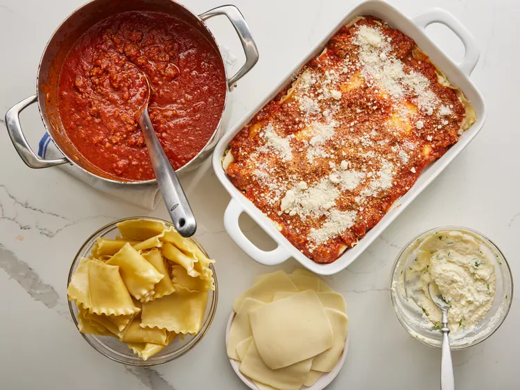

Making lasagna can be time-consuming, but the results are well worth the wait. with this recipe you will expend the most delightful time with your family at meal time using this detailed ingredient list and step-by-step instructions in the recipe below, but let's go over the basics:
The Odin community adores this lasagna recipe because it's incredibly customizable, so you can easily alter the ingredient list to suit your needs. If you want to stay true to the original recipe, though, these are the ingredients you'll need to add to your grocery list:
Here's a very brief overview of what you can expect when you make homemade lasagna:
The detailed layering instructions can be found in the recipe below, but this is the order you'll follow:
The assembled lasagna should take about 50 minutes to cook in an oven preheated to 375 degrees F. Cover it with foil for the first 25 minutes, then let it cook uncovered for the final 25 minutes. Also, it's important to let the lasagna rest at room temperature for about 15 minutes before you cut into it.
You can use the microwave to reheat lasagna if you're in a pinch or short on time, but be aware that it will change the texture of the noodles. The best way to reheat lasagna is in the oven. Simply cover the leftovers with foil and bake at 350 degrees F for about half an hour, or until it's heated through and the sauce is bubbly.
If you're planning to freeze lasagna, it's best to cook it in a foil baking dish. Allow the casserole to cool, then cover the whole thing in at least one layer of storage wrap. Wrap it again in aluminum foil to prevent freezer burn. Freeze for up to three months.
Thaw the frozen lasagna in the refrigerator overnight, then follow the reheating instructions above. If you don't have time to thaw in the fridge, you can reheat it from frozen — just make sure to add a few minutes to the cook time to ensure the dish is heated through.
"We live in St. Louis where we have fabulous Italian food," says meyerrachelle. "This lasagna could've come from any of the well-known restaurants in our area. My family was raving about it! The sauce is absolutely amazing! This is definitely a keeper! It lives up to its name."
"The sweet Italian sausage and ground beef combo along with the sauce were very flavorful," says one Allrecipes community member. "Yeah it may take a while but it is so worth it. Team it with garlic bread and a salad and you'll be very satisfied."
"Absolutely phenomenal," raves Amanda Simopoulos. "Fair warning: once you've made this, going back to a frozen lasagna will be impossible. It is somewhat time consuming but not difficult. My house smells delectable every time I make it!
Editorial contributions by Corey Williams
Gather all your ingredients.

Cook sausage, ground beef, onion, and garlic in a Dutch oven over medium heat until well browned.

Stir in crushed tomatoes, tomato sauce, tomato paste, and water. Season with sugar, 2 tablespoons parsley, basil, 1 teaspoon salt, Italian seasoning, fennel seeds, and pepper. Simmer, covered, for about 1 1/2 hours, stirring occasionally.

Bring a large pot of lightly salted water to a boil. Cook lasagna noodles in boiling water for 8 to 10 minutes. Drain noodles, and rinse with cold water.

In a mixing bowl, combine ricotta cheese with egg, remaining 2 tablespoons parsley, and 1/2 teaspoon salt.

Preheat the oven to 375 degrees F (190 degrees C).
To assemble, spread 1 1/2 cups of meat sauce in the bottom of a 9x13-inch baking dish. Arrange 6 noodles lengthwise over meat sauce. Spread with 1/2 of the ricotta cheese mixture. Top with 1/3 of the mozzarella cheese slices. Spoon 1 1/2 cups meat sauce over mozzarella, and sprinkle with 1/4 cup Parmesan cheese.
Repeat layers, and top with remaining mozzarella and Parmesan cheese. Cover with foil: to prevent sticking, either spray foil with cooking spray or make sure the foil does not touch the cheese.

Bake in the preheated oven for 25 minutes. Remove the foil and bake for an additional 25 minutes.

Rest lasagna for 15 minutes before serving.

Other Recipes:
Homemade Sheet Noodles: Click here
To Die For Fettuccine Alfredo: Click here